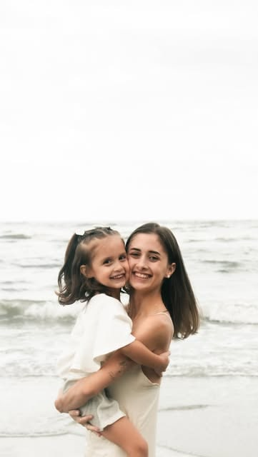
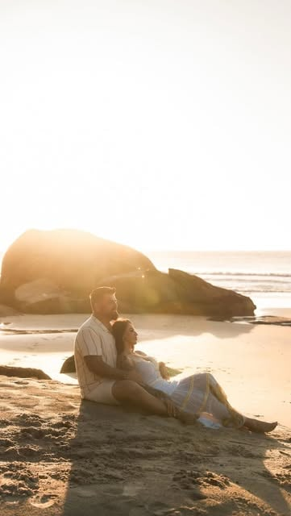
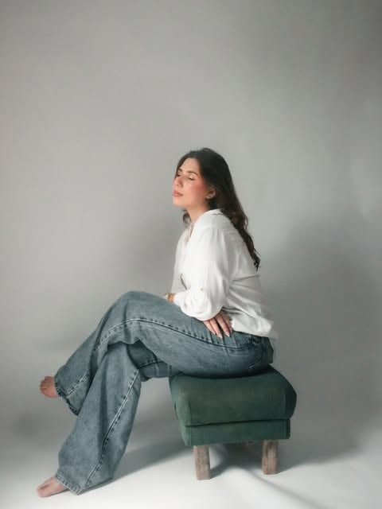
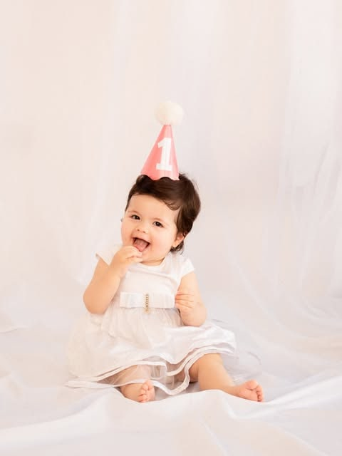
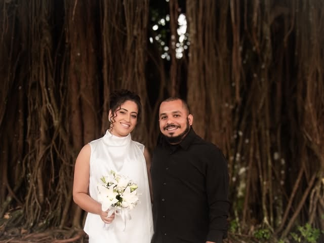
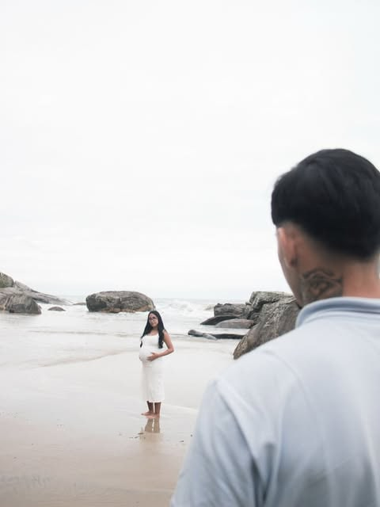
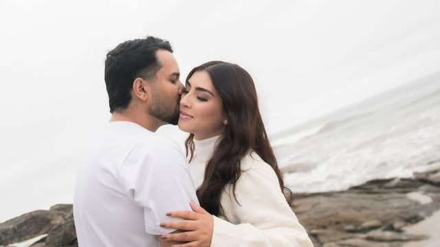
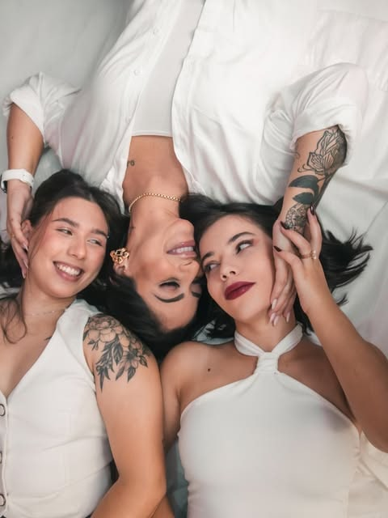
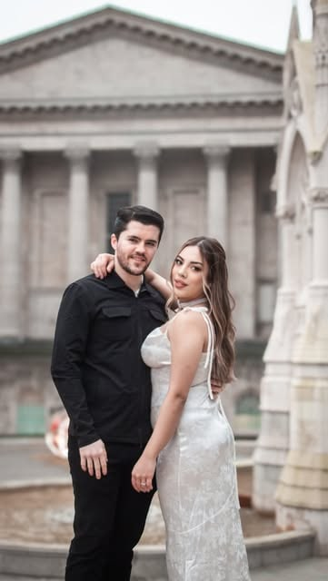

Fotógrafa no litoral do Paraná
Ana Proença
Cada foto é um pedaço de memória.
Ensaios de gestantes, famílias e casais, com o mar, a areia e a luz do fim de tarde como cenário.
Agendar ensaio pelo WhatsApp


Ensaios
-
Gestantes
Para guardar a espera do seu bebê do jeito que ela foi.
-
Famílias
Os seus juntos, das crianças pequenas aos avós.
-
Casais
Ensaios a dois na praia, no pré-wedding ou só porque sim.
Galeria






Oi, eu sou a Ana.
Fotografo gestantes, famílias e casais no litoral do Paraná. Gosto de ensaios leves, sem pose dura, em que vocês podem rir, se abraçar e esquecer da câmera por um tempo.
Ver mais no Instagram @analissafotografiaVamos marcar o seu ensaio?
Me chama no WhatsApp e conta o que você imagina. Eu respondo com datas e lugares.
Chamar no WhatsApp